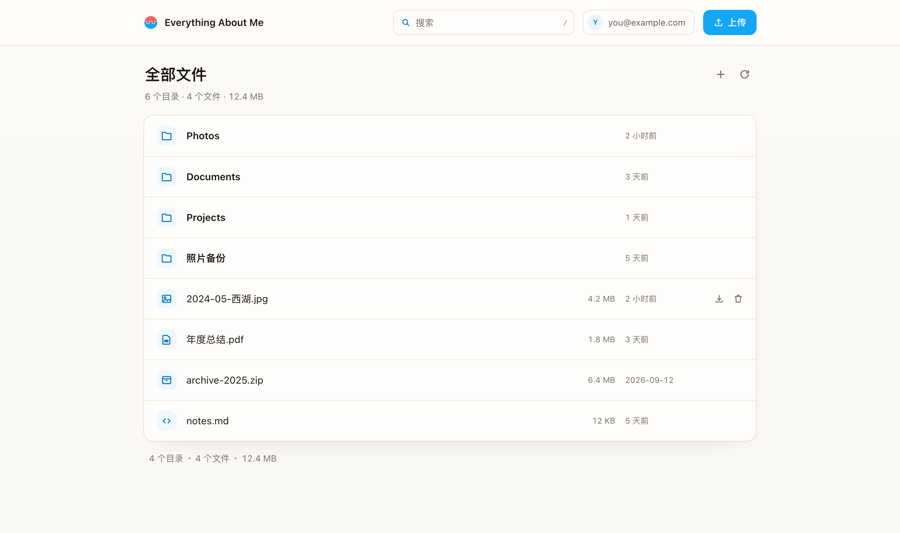

Plain / 01
字体、按钮、图标、字号都收敛成一套：系统字体栈、浅蓝图标、深蓝主按钮、10px 控件、14px 卡片。 B 暖白已经落地；A 素白是同一套组件的冷色 preset。

B · 暖白 · 920px 内容宽 · 58px 行高
打开完整方案组件、字号、圆角、按钮、图标两版完全一致；B 是基准（已落地），A 只改底色、内容宽、行高和标题。
冷白底色、880 内容宽、52 行高，标题回到面包屑。组件、字号、按钮、图标与 B 完全一样；适合更喜欢工具感的时候。
暖白、920 内容宽、58 行高，页面标题 + 一行统计。组件、字号、按钮、图标与 A 完全一样；只是温度不同。